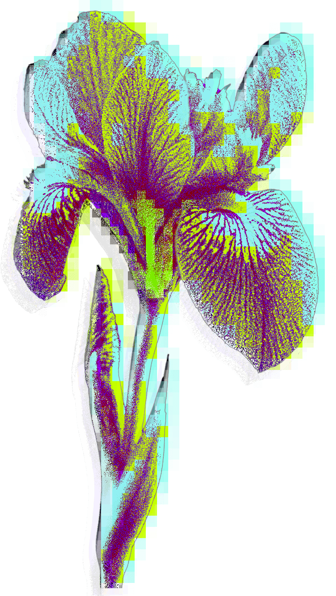
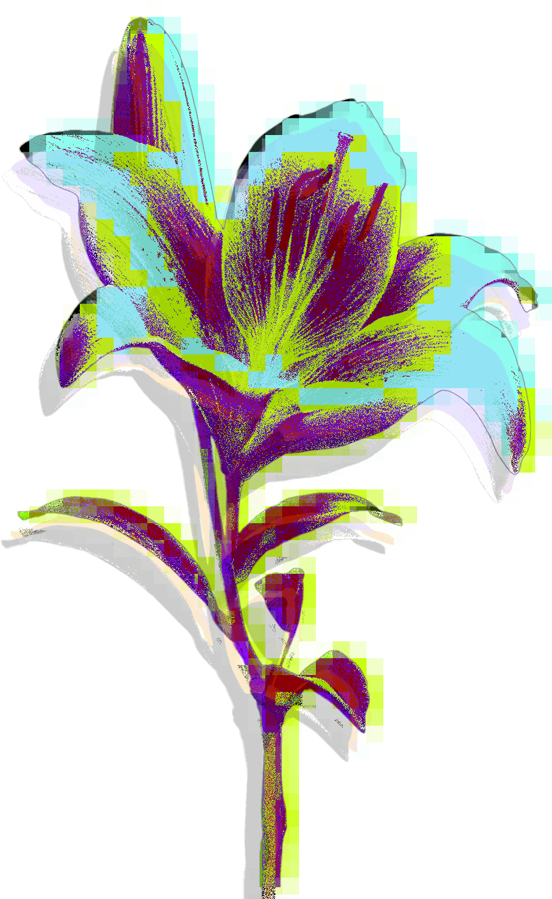
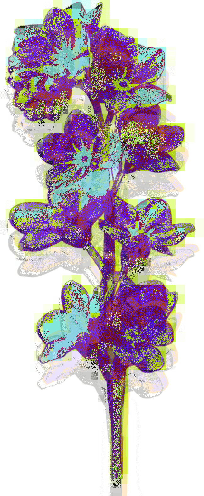

CHOOSE FLOWERS THAT CONTAINS YOUR
(
LOVE
)
FOR SOMEONE
꽃이 가진 메세지를 확인하며 상대방에게 전하고 싶은 꽃을
1~4개 골라주세요.

Iris
당신에게 제 사랑의 메세지를 보냅니다.
(사랑과 우정, 사랑의 메시지, 신의 축복)

Lily
당신을 변함없이 사랑합니다.
(순결, 깨끗한 사랑, 변함없는 사랑)

Myosotis
당신과의 사랑을 오래도록 기억하고 싶어요.
(나를 잊지 말아요, 진실한 사랑)
Rose
당신을 영원히 사랑합니다.
(정열적인 사랑, 아름다움, 영원한 사랑)
0 / 4
NEXT